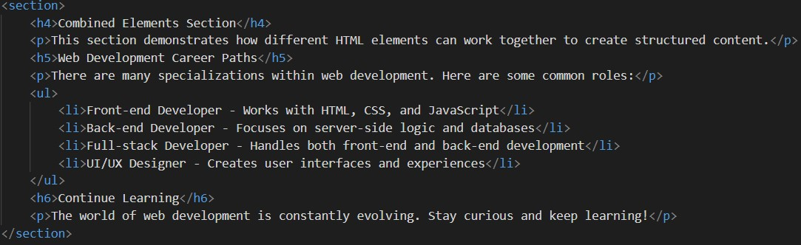

Welcome to this demonstration of various HTML elements. This document showcases different HTML tags and how they're used to structure content on the web.
HTML (HyperText Markup Language) is the standard markup language for documents designed to be displayed in a web browser. It defines the structure and content of web pages.
Understanding HTML is essential for anyone interested in web development. It forms the foundation upon which websites are built, allowing you to create structured documents with headings, paragraphs, lists, links, and more.
Here's a list of some popular web browsers used to view HTML content:
Follow these steps to create your own HTML page:
Below is a placeholder image showcasing an HTML element example:
Here are some helpful resources for learning more about HTML:
Visit MDN Web Docs for comprehensive HTML documentation and tutorials.
This section demonstrates how different HTML elements can work together to create structured content.
There are many specializations within web development. Here are some common roles:
The world of web development is constantly evolving. Stay curious and keep learning!